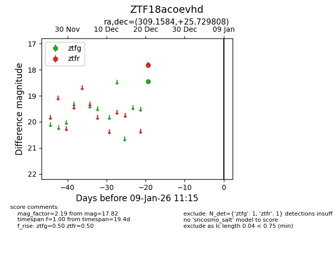
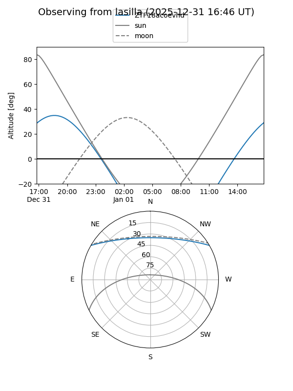
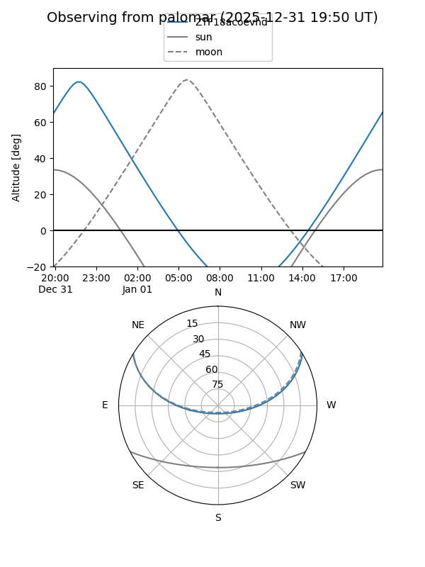

ZTF18acoevhd
Target ZTF18acoevhd at 2025-12-31 17:00
Aliases and brokers:
FINK:
Lasair:
ALeRCE:
alt names
ZTF18acoevhd (ztf,fink_ztf)
Coordinates:
equatorial (ra, dec) = 309.1584,+25.72981
equatorial (HMS+DMS) = 20:36:38.02,+25:43:47.31
galactic (l, b) = (68.0683,-9.04804)
Flags:
Photometry:
last ztfg=18.44, ztfr=17.82
1 ztfg, 1 ztfr detections
Lightcurve

Visibility


Additional plots